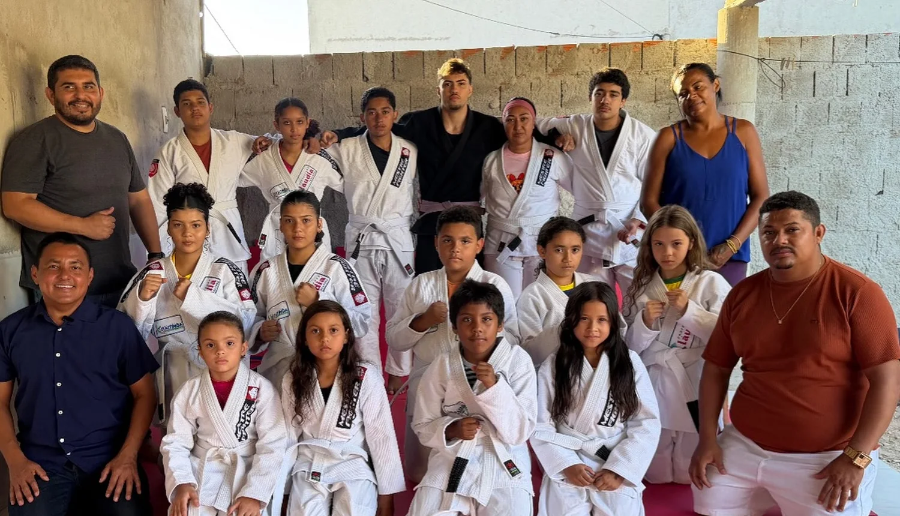

ESPORTE
Jiu-jitsu no Gereraú
Um núcleo gratuito anunciado para a comunidade do Mutirão, promovendo disciplina e convivência.

COMUNIDADE · ESPORTE · CULTURA · INCLUSÃO
Conectando a comunidade a iniciativas que transformam vidas pelo esporte, pela cultura, pela educação e pela inclusão.
Comunidadegente que faz a diferença
Projetos sociaisesporte, cultura e inclusão
Itaitinga, Cearáações nos nossos bairros
Mais oportunidadesiniciativas para as famílias
PROJETOS E INICIATIVAS
Um núcleo gratuito anunciado para a comunidade do Mutirão, promovendo disciplina e convivência.
Criatividade, movimento e momentos especiais em uma atividade infantil divulgada pelo Instituto.
Parceria divulgada com o CuidarTEA, aproximando tecnologia e cuidado às famílias atípicas.
As atividades acima constam das publicações analisadas. Horários, idade mínima e vagas precisam de confirmação com os responsáveis.
INFORMAÇÃO PARA A COMUNIDADE
NA ÍNTEGRA
Notícias com link para a publicação original do perfil. Conteúdos pessoais e eleitorais não entram nas inscrições sociais.
POR TRÁS DAS INICIATIVAS
Este portal reúne notícias sobre iniciativas do Instituto Itaitinga em Movimento e publicações da atuação da vereadora Professora Cláudia Bezerra, sua madrinha.
Nosso compromisso aqui é organizar as informações de forma acessível, com projetos sociais separados das propostas parlamentares e links para os registros originais.
Conhecer o perfil originalPROPOSTAS E ACOMPANHAMENTO
UM PRIMEIRO PASSO
Explore o fluxo previsto de pré-inscrição. A versão atual é uma demonstração: não coleta informações nem reserva vagas.
COMPROMISSO COM A INFORMAÇÃO
As notícias remetem às publicações originais. Datas e status são mantidos sem apresentar propostas como leis em vigor.
O Instituto e a atuação parlamentar possuem papéis distintos, apresentados em áreas próprias.
O formulário é apenas demonstrativo. Qualquer cadastro real exigirá implantação segura e cuidados com dados de menores.
DÚVIDAS FREQUENTES
Não. O formulário desta apresentação é demonstrativo e não recebe inscrições. A abertura oficial de vagas precisa ser confirmada.
O material recebido informa explicitamente gratuidade nas aulas de jiu-jitsu do Gereraú. As condições de outras atividades ainda dependem de confirmação.
Não. Este é um projeto de portal comunitário independente, ainda em demonstração, sem vínculo institucional com a Prefeitura.
Abra uma notícia e escolha “Ver publicação original”. Você será direcionado ao Instagram correspondente.